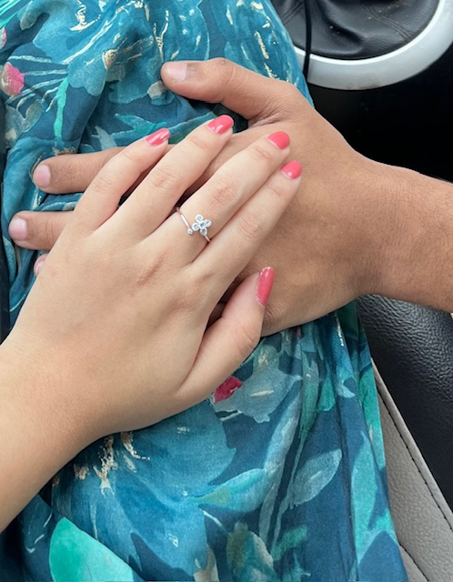
In this simple moment, with your hand in mine, everything feels steady, safe, and exactly where I belong.💕

That day, the distance didn’t matter—only the way you showed up for me.
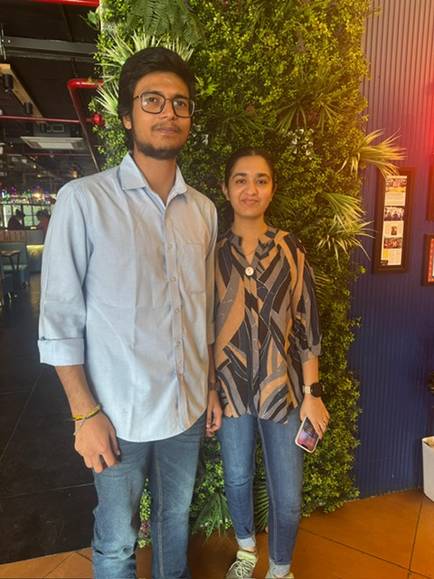
Between shared smiles and stolen glances, that meal became one of my favorites.
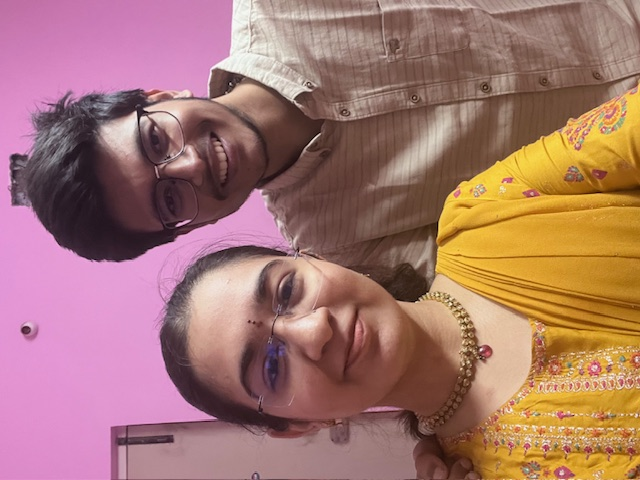
My place. Your arms. Our secret
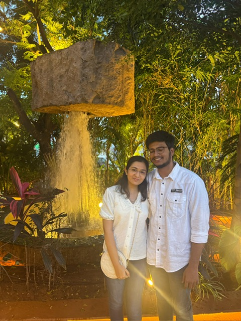
Even the waterfall paused for us.
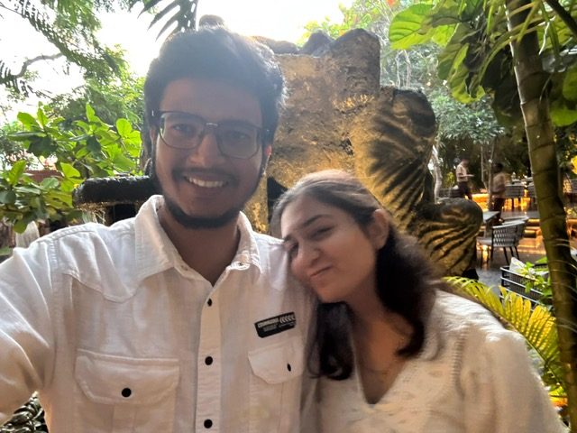
Among the sound of falling water, I found my peace on your shoulder. Loving you feels like coming home
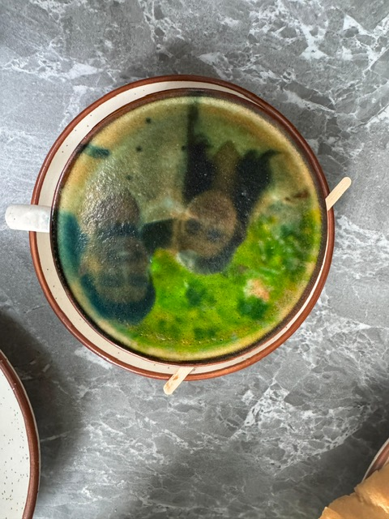
We laughed at seeing ourselves in foam, but somehow it felt right. Even the little moments with you turn into memories I want to keep
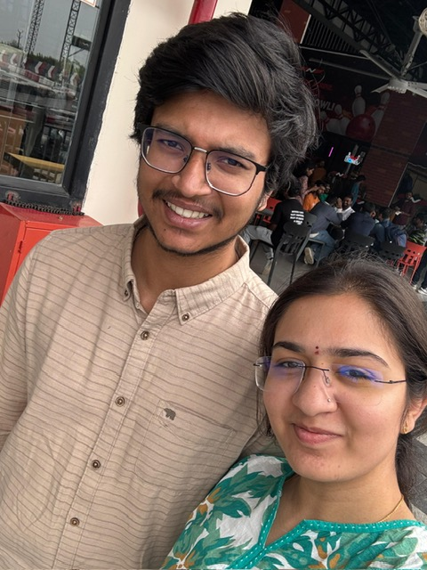
Another year of choosing each other. Your smile still feels like my favorite promise
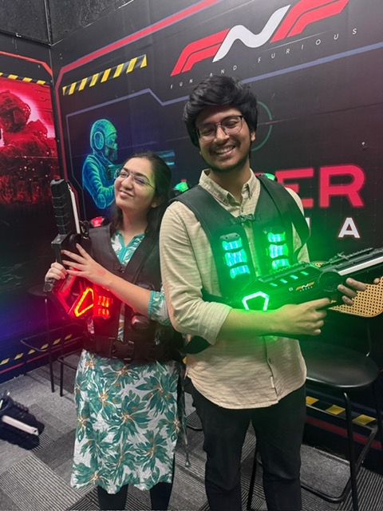
Side by side, hearts in sync. No matter the battlefield, I choose you
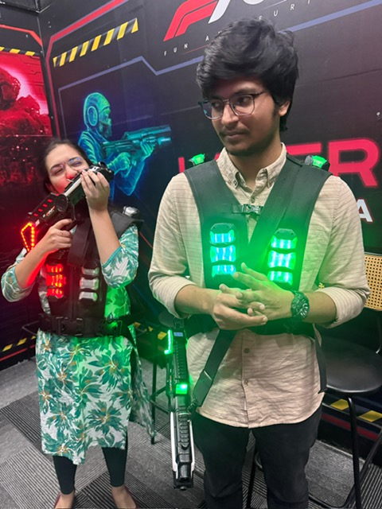
I pretended to be brave, and you pretended to be innocent. Somewhere between the two, love won
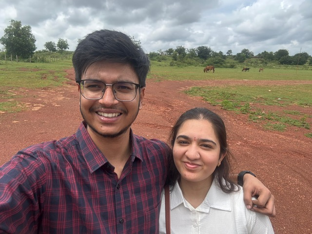
We disappeared without explanations, carrying only each other. For a little while, the world was just us and the road ahead
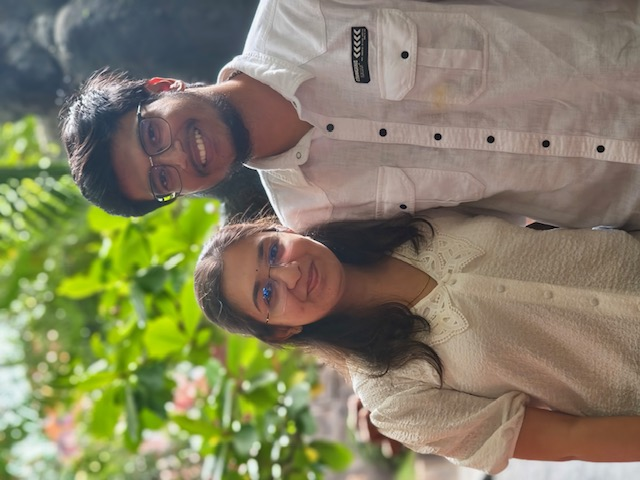
We matched without trying, like our hearts already knew. Loving you feels effortless, natural, meant.
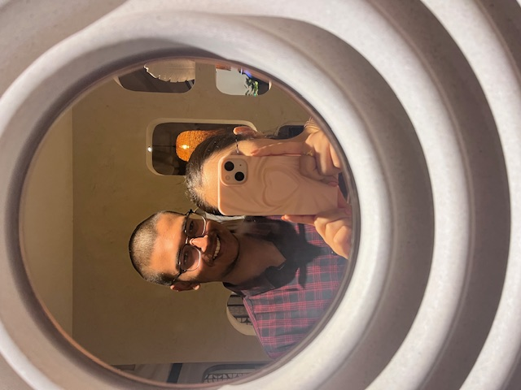
The mirror hid me, but it showed us. And somehow, that felt more honest
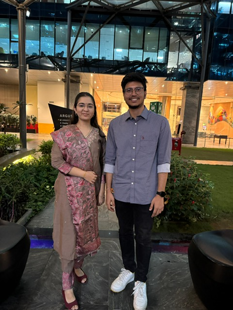
That day, our worlds quietly touched. I wasn’t just meeting family — I was stepping closer to the life we’re building together.
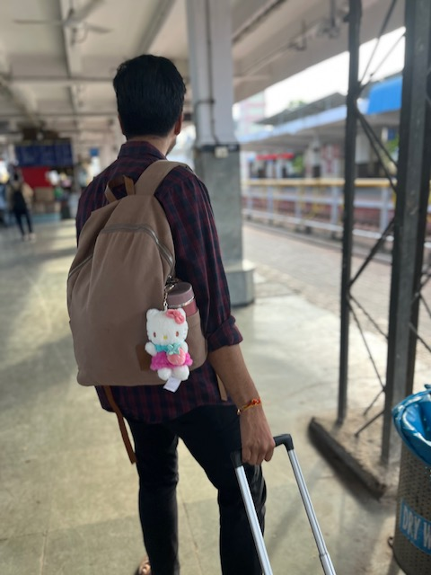
You carried my bags as if you could make the goodbye lighter. In that small act, I felt how deeply you love me.
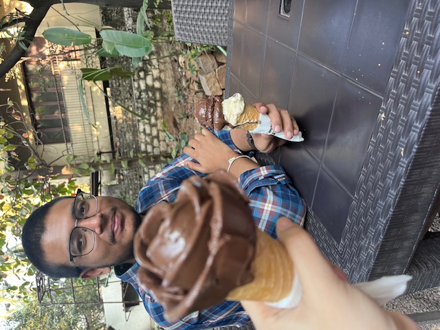
A little flower between us, time slowing down. With you, even the quiet moments feel full
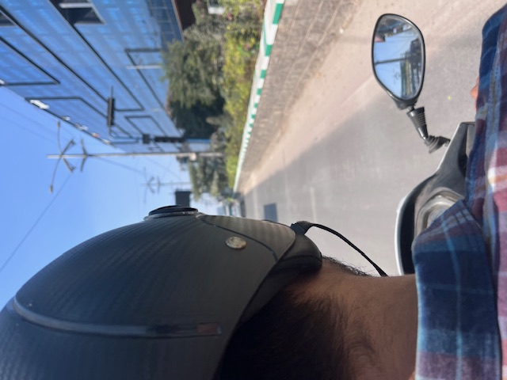
We rode together through pieces of our lives — your present, my past. Somewhere between them, love found its place.
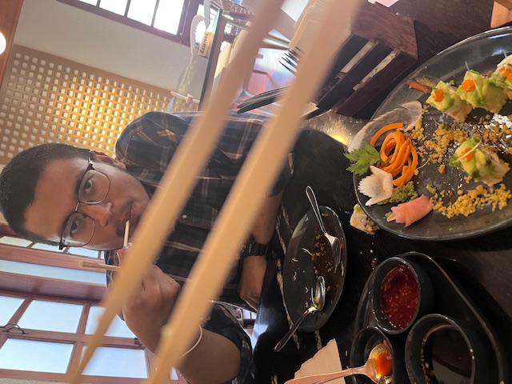
We fumbled, laughed, and tried again together. In that small struggle, love felt easy and light.
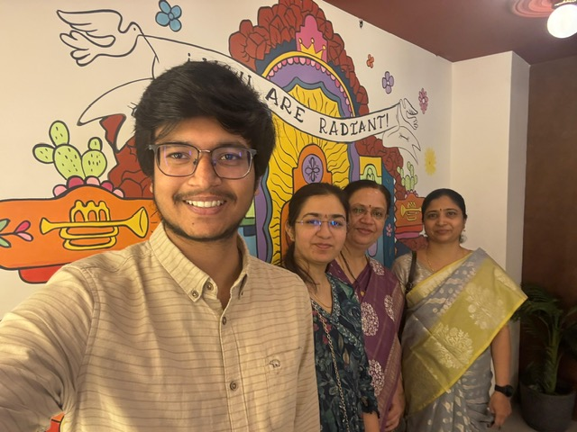
Standing between the women who raised us, I felt how love begins to grow roots
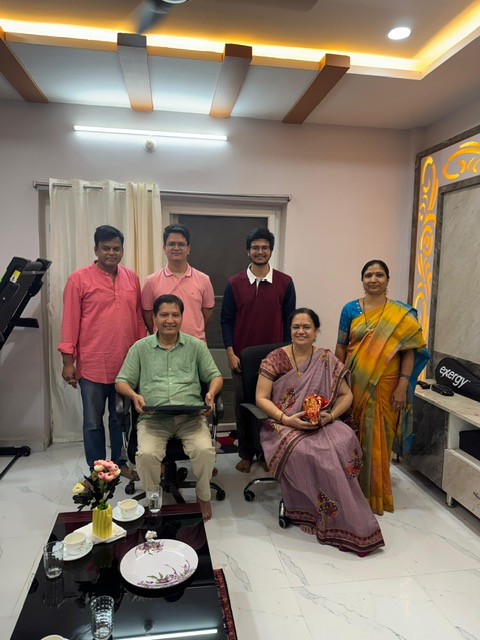
Some of us stood behind the camera, some beyond the frame. Still, family felt complete.